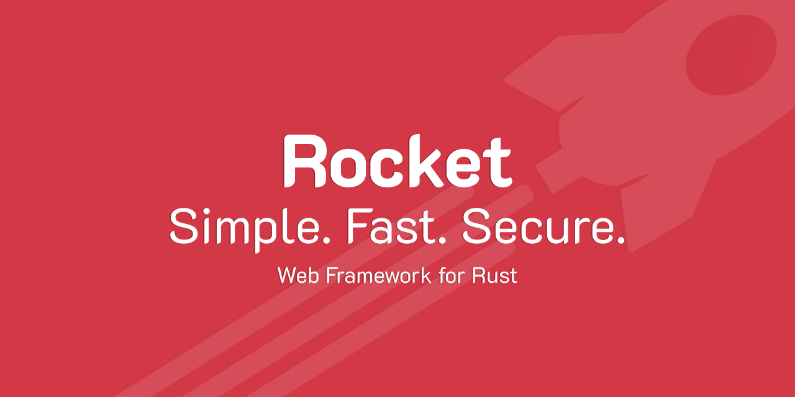
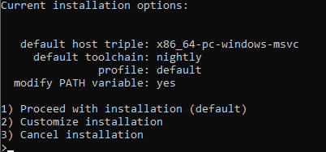
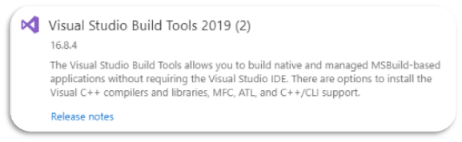

Tutorial: opzetten van een api in Rust
14 mei 2021
Inleiding in het Rocket framework
Waarom Rust?
Rust is gebaseerd op een low level taal, dus het is heel snel. Daarnaast probeert Rust ook de kenmerken van een high level taal te implementeren en dan vooral de memory safety van deze talen. Rust is daarom dan ook een taal die volgens mij in de toekomst meer en meer zal worden gebruikt. Daarom dat ik deze tutorial dan ook maak over Rust en meer specifiek over het Rocket framework.
Rust installeren van een standaard get route
-
Installeer Rust
- Ga naar de website van Rust en download de correcte installer vour jouw pc
- Voer deze installer uit, maar ga niet zomaar door met de installatie
- Customize de installatie door de default toolchain naar nightly te zetten. De nightly versie is namelijk nodig voor het Rocket framework 
-
Pas de omgevinsvariablen aan
Uit ervaring weet ik dat de installer soms de omgevingsvariabelen niet aanpast. Pas deze daarom nog eens handmatig aan.
- Typ in de zoekbalk: omgevingsvariabelen
- Klik op Omgevingsvariabelen voor uw account bewerken
- Dubbelklik dan op path en voeg het pad toe naar de bin folder in de .cargo folder. Deze is standaard geïnstalleerd onder het pad C:\Gebruikers\gebruiker\.cargo\bin
- Sla dit alles op en herstart de machine om er voor te zorgen dat alle wijzigingen actief zijn
- Zorg er ook zeker voor dat de C++ build tools zijn geïnstalleerd. Ik heb deze via de visual studio installer geïnstalleerd 
- Maak een nieuw rust project aan
- Ga naar de gewenste map waar je het project wil aanmaken
- Voor het volgende commando uit in je CMD
Cargo new project-name --bin - Er wordt een nieuw mapje aangemaakt met je project files erin
-
Ga naar de Cargo.toml file en voeg volgende dependency toe:
rocket = "0.4.7" -
Ga naar src/main.rs en voeg volgende code toe:
#![feature(proc_macro_hygiene, decl_macro)] #[macro_use] extern crate rocket; #[get("/")] fn index() -> &'static str { "Hello, world!" } fn main() { rocket::ignite().mount("/", routes![index]).launch(); } -
Voer het commando
cargo runuit in je project folder. Dit commando zou een applicatie moeten opstarten op poort 8000 - Ga naar localhost:8000. Daar zou je nu de string "Hello world" moeten terugkrijgen
Post Route
Nu hebben we al gezien hoe we een get route definiëren, maar met een get route alleen zijn we niet veel. Daarom nu nog een beetje uitleg hoe je een post route moet maken in Rust.
- Voeg onderstaande depencies toe in de Cargo.toml file:
serde = { version = "1.0", features = ["derive"] } serde_derive = "1.0.118" rocket_contrib = "0.4.6" - Voeg de uses van deze dependencies toe in de main.rs file. Voeg deze toe onder je macro uses:
use serde::Deserialize; use rocket_contrib::json::Json; -
Definieer je object die je wil posten naar je api (in dit geval is dit login info) als volgt. Voeg deze toe onder je uses
#[derive(Deserialize)] struct LoginInfo { email: String, password: String, } -
Maak je post functie en geef daarin mee dat je LoginInfo wil terugkrijgen als object
#[post("/user/login", data="<login_info>", format="json")] fn login_user(login_info: Json<login_info>) -> String { format!("Email:{}, password: {}", login_info.email, login_info.password) } -
Tot slot voeg je je functie toe aan je main methode, zodat deze kan uitgevoerd worden. Doe dit als volgt:
fn main() { rocket::ignite().mount("/", routes![index, login_user]).launch(); }
Conclusie
Nu heb je alles gezien om aan de slag te kunnen met een basis api. Natuurlijk kan je deze api nog uitbreiden. De demo code en enkele andere voorbeelden zijn samen met een postman collectie terug te vinden op mijn github.